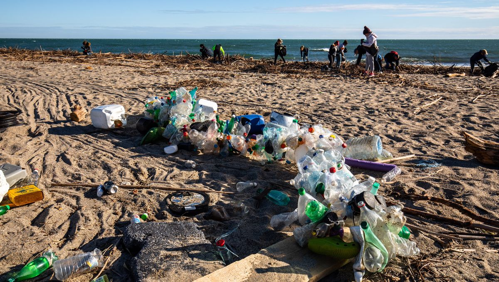

Des plages nettes pour l'été !

Le but
Le nettoyage manuel :
- contribue à résister à l'érosion côtière
- modifie, en outre, la compacité du sable, le rendant très volatil
- participe au maintien du volume de sable et des dunes et préserve ainsi la laisse de mer
- permet aux premiers bourrelets de sable de se former en haut de plage